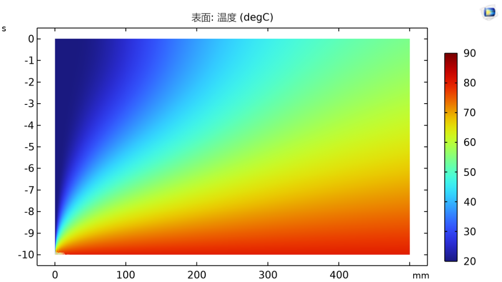
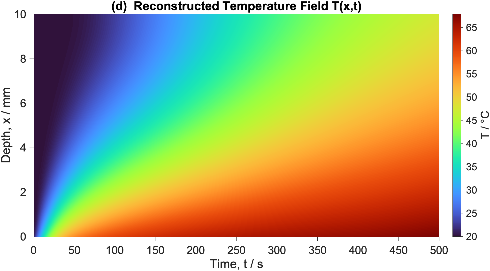
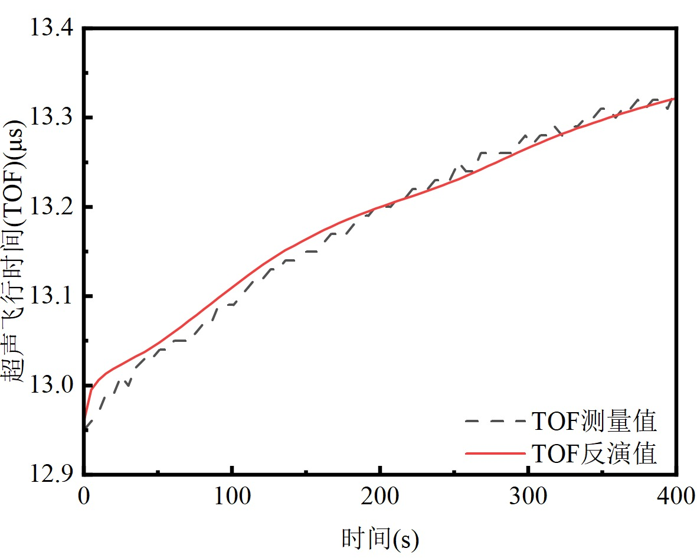
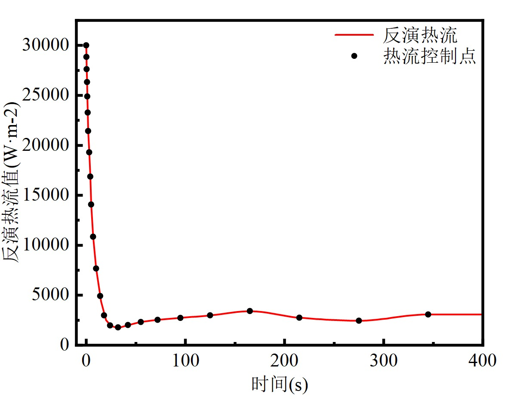
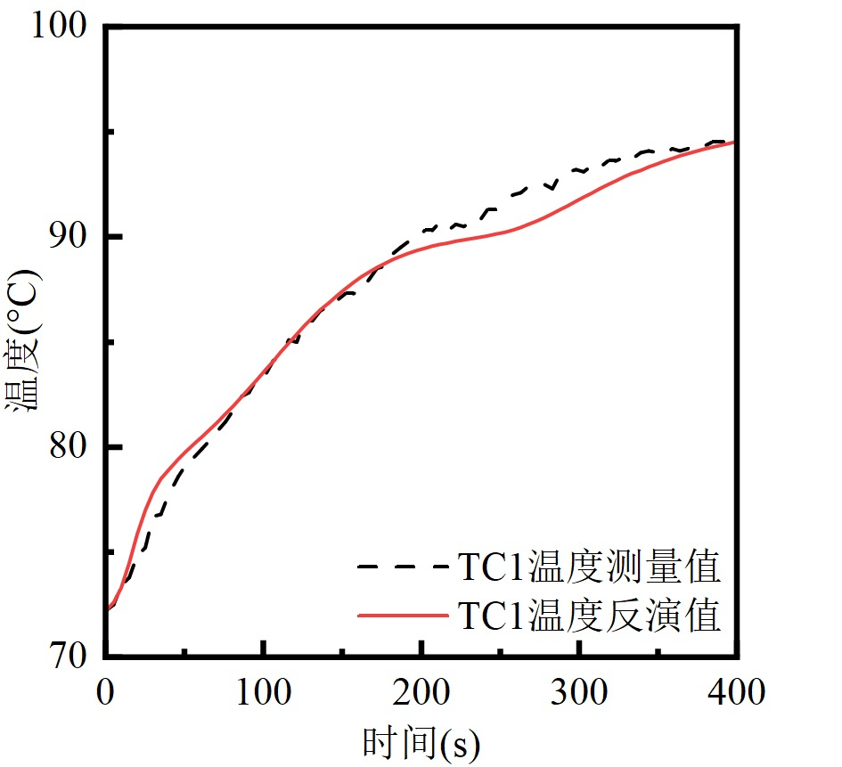
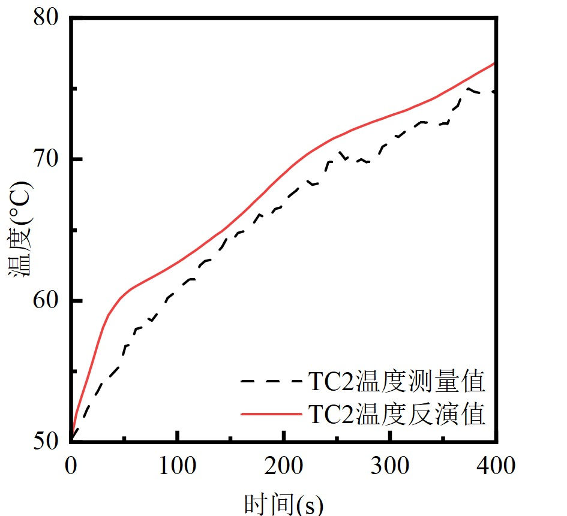
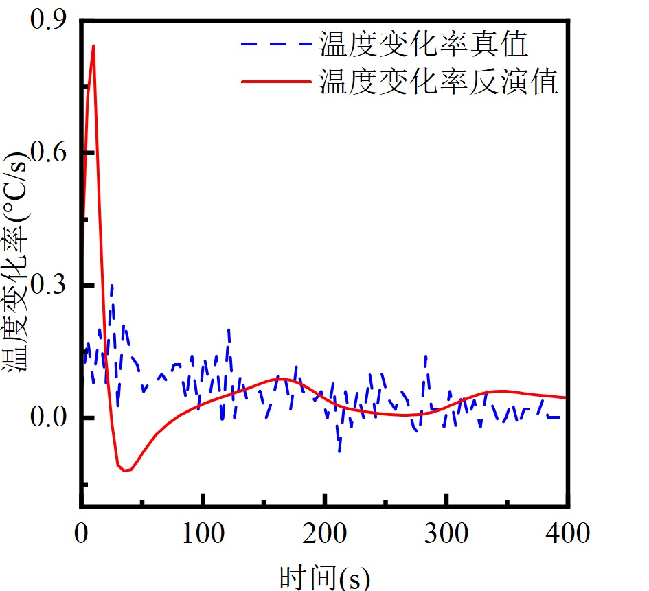
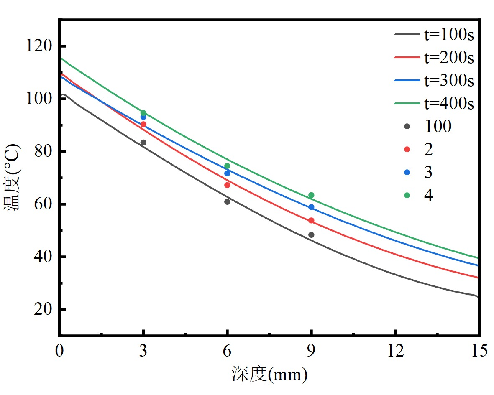

核心工程方向：机械设计、仿真分析、超声检测、算法开发
Education
武汉理工大学
交通与物流工程学院 · 交通设备与控制工程（卓越实验班） · 本科 · 2022.09 - 2026.06
武汉理工大学是教育部直属全国重点大学、国家“双一流”建设高校，交通与物流工程学院面向交通运输装备、船舶与海洋工程、物流工程等领域培养复合型工程人才。卓越实验班注重工程实践、创新训练与科研项目融合，本科阶段系统接受机械设计、控制工程、测试技术、船舶机电与智能交通相关训练。
综合测评
93
机械设计基础
C 语言程序设计
单片机与嵌入式应用
流体力学
计算流体力学
测试技术与信号处理
超声检测
数字信号处理
PLC 原理与应用
Honors
- 卫华三等奖学金
- 第十三届全国海洋航行器设计与制作大赛国赛特等奖（2024）
- 第十四届全国海洋航行器设计与制作大赛国赛一等奖（2025）
- 第九届全国高校智能交通创新与创业大赛校赛三等奖
Profile
从结构设计到实验验证，关注工程方案落地。
发明专利：3 项已公开，3 项已受理
全国海洋航行器设计与制作大赛国家级奖项
Skills
一套面向研发现场的复合能力。
3D
机械制图与结构建模
熟练使用 SolidWorks、AutoCAD，能够独立完成复杂机械结构、实验台架与工程装备三维建模。
- 造桥机运动机构建模
- 门座式起重机台车总成
- 钢结构与船舶功能舱设计
CAE
仿真分析
熟悉 ANSYS、Fluent、Comsol，可完成结构力学仿真、复合材料声学仿真与传热模型计算。
- 90m 主梁多工况静力分析
- 三层超声模型声学仿真
- 二维传热方程温度场计算
AI
算法编程与数据处理
掌握 Python、C++、Matlab，用于实验数据处理、信号分析、可视化与参数反演算法开发。
- 差分进化算法参数反演
- 共轭梯度法边界热流反演
- Matlab 信号处理与可视化
EN
英文与工程表达
雅思 IELTS 6.5，通过 CET-6，具备较好的英文阅读、表达与技术文献理解能力。
- 英文技术资料阅读
- 实验与项目材料整理
- 跨团队技术沟通
Experience
在真实项目中理解工程约束。
实习经历覆盖桥梁施工装备、柴油机装配测试、船用发动机试车与产品试验中心场景，形成从设计到验证的工程视角。
中铁十一局集团汉江重工有限公司 · 机械设计工程师实习生
参与深汕铁路跨沪蓉高速公路特大桥 HJZQS350 悬灌造桥机研发，负责前后支承台车运动机构及部分电气设备建模，并使用 ANSYS 对 90m 主梁结构进行多工况静力分析。
在黄冈武穴港区综合码头项目中完成 MQ2530 门座式起重机三轮主动台车、从动台车总成与支腿节拼油缸三维建模，同时参与立体停车场钢结构建模。
潍柴控股集团有限公司 · 实习生
在潍柴动力学习柴油机组成结构与设计理念，进入车间参与直列式及 V 型四缸四冲程柴油机装配、试车测试，并在产品试验中心接触 NVH、三高、轻毂/重毂整车与五轴实验。
在潍柴重机学习船用低速机，参与 M55 系列发动机、WP180 系列发动机试车。
Projects
项目经历聚焦船舶、交通装备与超声检测。
水润滑轴承复合材料温度超声测试技术研究
负责人
开展 PEEK 材料超声标定实验，建立温度与声速关系；使用 Comsol 模拟复合材料加热过程，并结合共轭梯度法与 Crank-Nicolson 差分模型反演边界热流和温度场分布。
船舶水润滑轴承润滑与磨损原位测量方法研究
核心成员
基于超声无损检测建立磨损、膜厚、粗糙度等参数识别模型，完成复合材料超声实验、三层超声模型声学仿真与反射系数幅度谱计算。
三峡多功能电力顶推船组
国家级大学生创新创业项目
设计船舶动力与功能分离的船组、新型顶推船连接机构和航道除雾助航系统，负责功能船舱设计、三维建模与有限元可靠性分析。
大型通航隧洞船舶过洞方式关键技术研究
核心成员
围绕通航隧洞场景下船舶过洞方式与关键技术开展研究，参与技术方案分析与工程资料整理。
福建省动力电池回收循环利用发展战略研究
核心成员
参与动力电池回收循环利用方向的战略研究，协助完成行业资料梳理、技术路径分析与研究支撑工作。
Thesis
本科毕业论文：水润滑轴承复合材料温度超声测试技术研究。
围绕船舶推进系统水润滑轴承内部温度难以非侵入式监测的问题，论文以 PEEK 复合材料为对象，构建超声脉冲回波测温、反演算法、数值仿真与物理实验验证的一体化方案。
热声耦合建模
从 PEEK 复合材料声速-温度关系出发，建立一维瞬态导热与超声声时积分模型，把“内部温度场”转化为可由超声飞行时间（TOF）观测的反演问题。
反演算法求解
构建融合 TOF 残差、二阶曲率惩罚、同步热电偶测点修正与 Tikhonov 正则化约束的目标函数，并采用共轭梯度法反演边界热流和全局温度场。
仿真与实验验证
通过 COMSOL 多物理场仿真生成温度场真值，再与反演计算值对比；同时搭建高频超声原位测试平台，用 PEEK 试块实验验证方法精度与鲁棒性。
材料与超声响应
确定 PEEK 声速-温度线性映射，采集超声回波 TOF，形成可观测信号。
正向传热与声时积分
用 Crank-Nicolson 差分模型求解传热方程，将温度场映射到声时变化。
联合反演
通过共轭梯度法同时反演边界热流与内部温度场，处理逆问题病态性。
仿真与实验闭环
将仿真真值、反演计算值和热电偶测点结果对比，量化误差与拟合效果。
Simulation Comparison
仿真真值与反演计算值高度一致。
左图为 COMSOL 多物理场仿真得到的温度场真值，右图为基于超声 TOF 与反演算法重构得到的计算温度场。两张云图的温度梯度与空间分布基本一致，用来说明模型、算法和数值验证形成了闭环，也体现了毕业设计中从仿真建模到算法反演的工作量。








0.01%
仿真 TOF 反演相对误差以内
0.8°C
仿真全周期温度最大偏差以内
0.9°C
实验典型深度节点 RMSE 以内
Contact